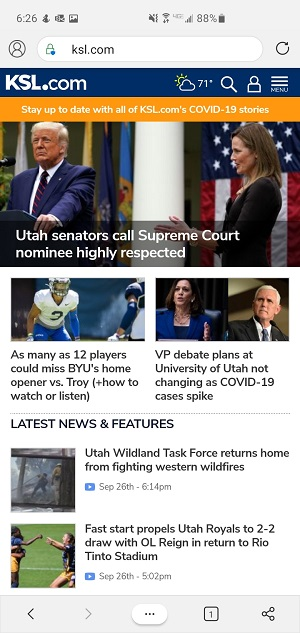

KSL
The KSL news site exemplifies visual hierarchy. The eyes are first drawn to a large headline story about Donald Trump. Secondary articles that are significantly smaller sit below the headline article. Finally, even articles with even smaller images appear at the bottom.